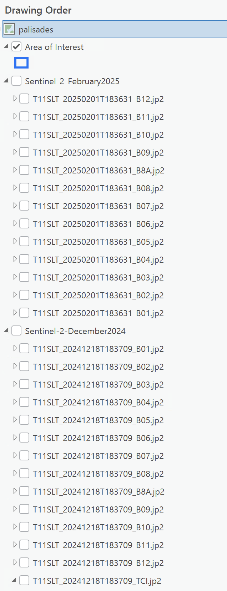

Palisades Fire
This exercise explores the European Space Agency's Copernicus Data Space Ecosystem STAC API. Copernicus data is free to abtain, but still requires a login. Because that takes time to set up, we will query the catalog for data. I have provided layerfiles for us to use.
Copernicus Browser https://browser.dataspace.copernicus.eu/
Set up a stac connection in your project. https://stac.dataspace.copernicus.eu/v1/
Zoom in to the Palisades/Malibu area northwest of Los Angeles. In the project File Geodatabase, I have provided an area of interest.

For pre-fire, set your temporal extent to 2025-12-10 through 2025-12-31. When you view your results, click the info button and review the metadata. Look for cloud cover percentage.
Repeat the same for post-fire with date range of 2025-02-01 through 2025-02-10.

Notice how the downloads have a separate image for each band. We are going to create several raster functions using the Raster Calculator and Band Conmbination function.
| Visualization | Band Combination* |
|---|---|
| Burned Area | B12, B11, B4 |
| Fire vs. Vegetation | B11, B8, B4 |
| Ash and Burn Severity | B12, B8A, B4 |
| NBR: Normalized Burn Ratio | (B8-B12)/(B8+B12) |
*Further reading on Sentinel 2 Bands and Combinations.